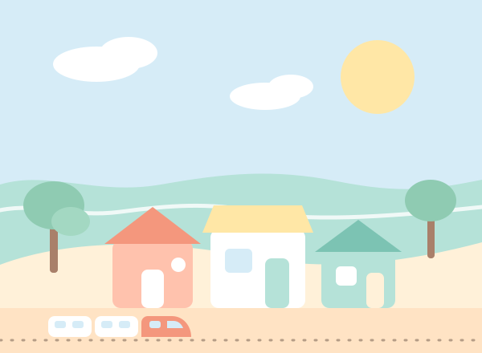

기차 시간까지, 딱 그만큼의 강릉
여행틈
여행 사이사이 남는 한두 시간, 그 틈에 들르기 좋은 강릉의 작은 책방과 소품샵, 공방과 카페를 모았어요. 감자 굿즈를 구경하고, LP를 골라 듣고, 다락방에서 영화 한 편을 만나 보세요.
13:10강릉 도착
3시간의 틈
16:10기차 출발

틈새 추천
지금 어디에 있고 시간이 얼마나 남았는지 편하게 말해 주세요. 이동 시간과 돌아오는 시간까지 넣어 코스를 짜 드려요.
시제품이라 실제 AI 대신 간단한 규칙으로 답해요. 이동 시간은 어림값이고, 휴무일은 따로 확인하지 않아요.
동네 가게와 작은 공간
종류와 동네를 골라 찾아보세요. 카드를 누르면 자세한 정보를 볼 수 있어요.